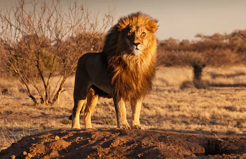
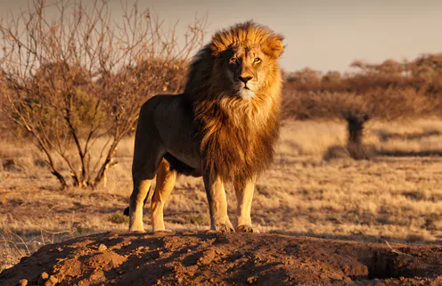

- LION Common Name: African lions
Scientific Name: Panthera leo
Type: Mammals
Diet: Carnivore
Group Name: Pride
Size: Head and body, 4.5 to 6.5 feet; tail, 26.25 to 39.5 inches
Weight: 265 to 420 pounds
Size relative to a 6-ft man:
What is the African lion?
African lions have been admired throughout history for as symbols of courage and strength. These iconic animals have powerful bodies—in the cat family, they’re second in size only to tigers—and roars that can be heard from five miles away. An adult lion’s coat is yellow-gold, and juveniles have some light spots that disappear with age. Only male lions typically boast manes, the impressive fringe of long hair that encircles their heads.
Habitat
African lions once roamed most of Africa and parts of Asia and Europe. But the species has disappeared from 94 percent of its historic range and can only be found today in parts of sub-Saharan Africa. These lions mainly stick to the grasslands, scrub, or open woodlands where they can more easily hunt their prey, but they can live in most habitats aside from tropical rainforests and deserts. Asiatic lions (Panthera leo persica) are a subspecies of African lion, but only one very small population survives in India's Gir Forest.
Lion prides and hunting
Lions are the only cats that live in groups, which are called prides—though there is one population of solitary lions. Prides are family units that may comprise anywhere from two to 40 lions—including up to to three or four males, a dozen or so females, and their young. All of a pride's lionesses are related, and female cubs typically stay with the group as they age. Young males eventually leave and establish their own prides by taking over a group headed by another male. Males defend the pride's territory, marking the area with urine, roaring menacingly to warn intruders, and chasing off animals that encroach on their turf. Female lions are the pride's primary hunters and leaders. They often work together to prey upon antelopes, zebras, wildebeest, and other large animals of the open grasslands. Many of these animals are faster than lions, so teamwork pays off. Female lions also raise their cubs communally. After the hunt, the group effort often degenerates to squabbling over the sharing of the kill, with cubs at the bottom of the pecking order. Young lions do not help to hunt until they are about a year old. Lions will hunt alone if the opportunity presents itself, and they also steal kills from hyenas or wild dog
Threats to survival
Today, there are only half as many African lions than there were 25 years ago. The International Union for the Conservation of Nature (IUCN) estimates that fewer than 25,000 lions remain in Africa, which is why the organization classifies them as vulnerable to extinction. African lions face a variety of threats—most of which can be attributed to humans. Fearing that lions will prey on their livestock, which can be a significant financial blow, ranchers may kill the animals both in retaliation and as a preventative measure, sometimes using pesticides as poison. Poachers target the species, too, as their bones and other body parts are valuable in the illegal wildlife trade. The role trophy hunting plays is controversial. Mismanaged hunting in the past has caused lions to disappear from some habitats, while hunters and those involved in the industry say hunting fees generate money for lion conservation. National Geographic Explorer Craig Packer, however, has said the amount generated by hunting is so "underwhelming…[that] it’s no wonder that despite years of lion hunting being allowed in [some] countries, the lion population has plummeted." Further fueling this conflict between lions and humans is the loss of prey across the species’ range. African lions prey on large herbivores, a population that’s being hunted for an increasingly commercial bushmeat trade. The IUCN estimates these populations have declined by as much as 52 percent in East Africa and 85 percent in West Africa. With less food available in the wild, lions may be more likely to turn to hunting domesticated animals like livestock
Conservation
Helping humans learn how to live with lions is key to ensuring their survival. Conservation organizations are working to change attitudes toward lions through compensation initiatives. Some of these models offer communities financial rewards when their local lion populations rise, while others pay farmers to replace their livestock that have been killed by lions. Other conservationists have focused on creating protected areas for lions. In Botswana’s Selinda area, only a single lioness and her cub lived there when filmmakers Dereck and Beverly Joubert, both National Geographic Explorers, turned the land into a protected reserve and photographic tourism camp. Now about a hundred lions roam the reserve. In Mozambique’s Zambezi Delta, where the effects of a protracted civil war caused lion numbers to plummet, the largest-ever lion translocation project brought in 24 lions from South Africa in 2018—they’re now settled in and starting to have cubs.